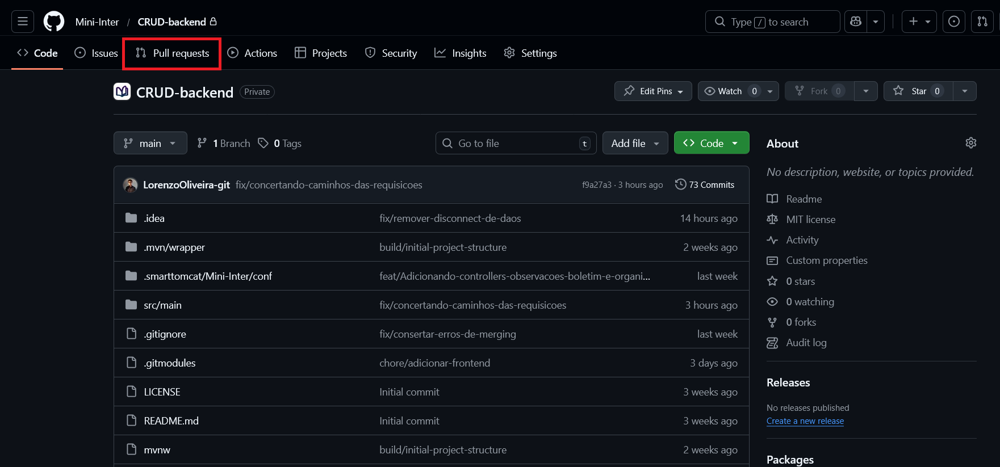
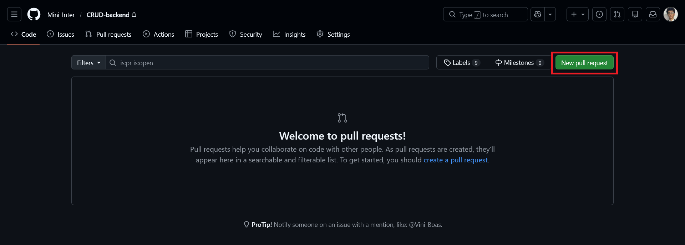
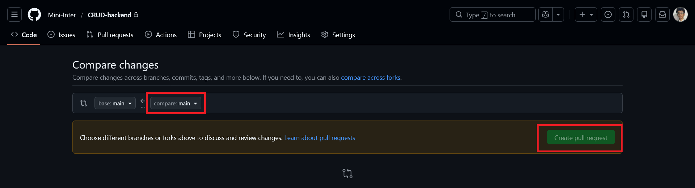

Branches
A base de toda PR (Pull Request) é o trabalho separado em branches. Começamos por criar uma nova branch para a adição de uma feature nova, correção, ou reestilização de uma página existente.
$ git checkout -b 'adicionar-feature'
Alterações, commit e push
Após a criação da nova branch, apenas adicione as mudanças ao git, dê um commit, e suba ao repositório remoto.
$ git add .
$ git commit -m "feature-adicionada"
$ git push -u origin adicionar-feature
Começo da Pull Request...
Ao subir as alterações para o repositório remoto, entramos no GitHub, localizamos o projeto, e naturalmente entramos na aba 'Pull Requests'.
Ao entrar na página, localizamos o botão 'New pull request', e o clicamos.
Em seguida, escolhemos qual branch fará merge em qual: comumente, selecionamos a main a direita, (quem receberá o pull) e nossa branch com a alteração a esquerda. Adicionamos um título, uma descrição e criamos a pull request! Agora é apenas a espera pela aprovação dos colaboradores!
